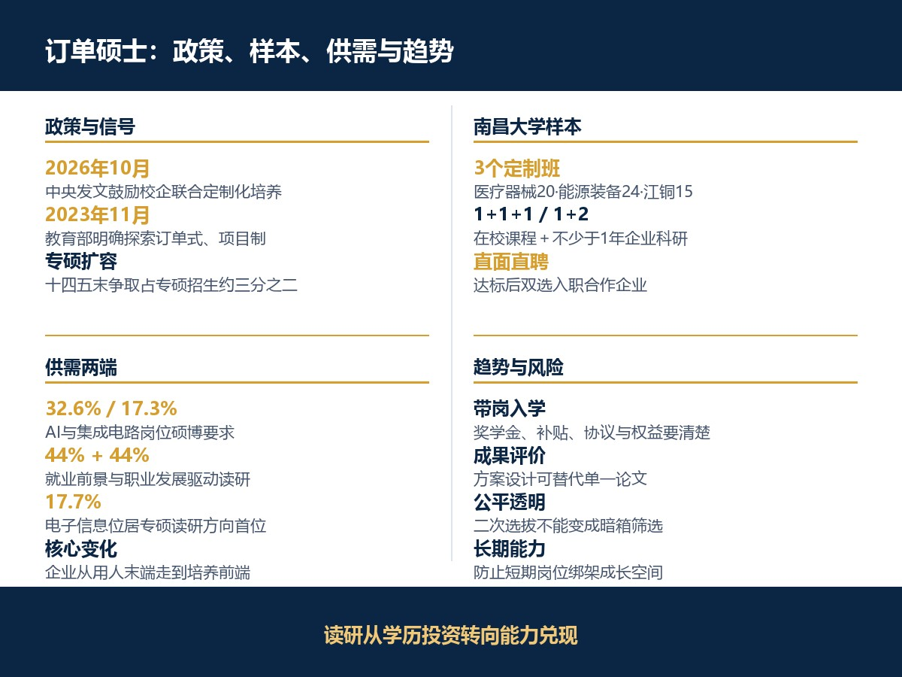

2026 年 10 月，中共中央、国务院印发《关于发展新质生产力的意见》，明确提出“鼓励企业和高等学校联合定制化培养人才”。政策落地到研究生教育端，最直接的信号来自南昌大学卓越工程师学院：2027 年硕士招生设置“项目制”招生、“订单式”培养和“导向化”评价，与行业龙头共建医疗器械、未来能源与装备制造、江铜三个成建制定制班。企业不再只是在毕业季来招聘，而是从选拔、课程、导师、科研实践到就业衔接全程进入。这个变化值得重视，因为它可能改写专业学位硕士的竞争逻辑。

一、事实层面：订单式培养已经从试点走向成建制
政策链条其实已经铺垫多年。2023 年 11 月，教育部发布《关于深入推进学术学位与专业学位研究生教育分类发展的意见》，明确提出探索全日制专业学位研究生订单式培养、项目制培养；同时提出到“十四五”末，将专业学位硕士研究生招生规模扩大到硕士招生总规模的三分之二左右。2026 年的中央文件则把校企联合定制化培养放到“发展新质生产力”的人才工作机制中，信号更直接。
南昌大学的方案把这句话变成了可执行的流程。三个定制班拟招收 20 人、24 人、15 人，分别对接医疗装备、新型电力系统和有色金属数智化转型。学生取得拟录取资格后，还要参加校企联合面试，通过双向选择进入班级；培养实行校内导师与企业导师“双导师制”，采取“1+1+1”或“1+2”工学交替模式，在校完成课程后进入合作企业开展不少于 1 年的科研实践；培养达标后通过“直面直聘”双选入职合作企业。学校还提出以技术攻关方案、产品设计、企业问题解决报告等实践成果申请学位的多元评价方式。
更早的探索并不少见。南京航空航天大学自 2009 年起试点全日制专业学位硕士校企联合培养；安徽工程大学卓越工程师学院（奇瑞学院）第三期从 2025 级专硕研究生中择优录取 57 人，安排到奇瑞开展 6 至 12 个月专业实践，并提前签订就业三方协议；西南大学与长安汽车采用“1+1+1”分段培养；中国石油大学、中国地质大学、西南石油大学等与中国海油组建订单培养班，达标后直接或优先录用；浙江大学的中核专项则在入学前签订劳动合同并计算工龄；福州大学与瑞芯微的集成电路定制班已合作六次。订单硕士不是单点新闻，而是一组正在扩大的实践。
二、为什么现在推得动：供需两端都在改变
产业端的需求越来越明确。麦可思产业人才需求监测数据显示，人工智能工程技术人员招聘中，32.6% 的岗位明确要求硕博学历；集成电路工程技术人员招聘中，硕博比例为 17.3%。这类岗位不是只要一纸文凭，而是需要理解技术场景、解决真实工程问题。新质生产力相关产业的技术迭代快、工程实践门槛高，传统“先毕业、再找岗位”的模式显得滞后。
学生端也在变。麦可思研究数据显示，2025 届读研本科生中，“就业前景好”和“职业发展需要”并列成为首要读研动机，占比均为 44%。读研越来越被当作一项回报可计算的职业投资。当企业提前进入培养过程，学生看到的就不只是专业名称和学校牌子，而是项目、导师、补贴、实习和就业路径。
专业学位本身也在向产业靠拢。2025 届读研本科生中，电子信息占 17.7%，材料与化工占 7.2%，机械和临床医学各占 6.2%，能源动力占 5.9%。这些方向与国家战略性新兴产业、先进制造、医疗卫生和“双碳”目标高度重合。订单硕士的兴起，本质上是专业学位回应产业需求的一次加速。
三、深层变化：企业从用人末端走到培养前端
第一个变化，是评价标准从“学历信号”转向“能力证据”。过去研究生培养质量主要由课程成绩、论文和学位授予来衡量，企业只能在毕业后通过简历和面试判断能力。定制化培养把企业真实项目前置到培养过程，学生解决过什么问题、参与过什么技术攻关、成果能否被企业采用，都成为可观察的证据。
第二个变化，是培养路径从“学校单主体”转向“校企双主体”。2024 年厦门大学鲍威团队的调查发现，工程类专业学位研究生培养中，项目化教学不足是供需错位的重要原因。高校教师评价体系仍偏重论文和科研成果，部分专硕被纳入导师原有学术课题，培养路径与学硕趋同；部分教师对产业前沿缺乏了解，难以在企业项目中提供及时指导。企业走到前台，为解决这个老问题提供了新的组织方式。
第三个变化，是读研的“不确定性”被部分压缩。传统专硕的痛点在于学费、时间和就业回报之间缺少稳定预期。定制班通过联合面试、专项补贴、住宿保障、三方协议和直聘安排，把“考上—培养—就业”串成更清晰的链条。对部分学生而言，这降低了试错成本；对高校而言，这也意味着培养质量将更直接地接受产业端检验。
四、四类风险：订单不是保险箱
第一类风险落在学生身上。“带岗入学”听起来诱人，但协议条款必须清楚。浙江大学中核专项学生入学前签劳动合同、企业计算工龄并提供工资和五险一金，毕业后需为企业工作一年以上；这类安排既带来保障，也带来约束。学生需要弄清补贴性质、服务期限、违约责任、学位取得与就业绑定之间的关系，不能只看眼前收益。
第二类风险落在高校身上。如果“订单”变成简单按企业岗位裁剪课程，专业学位可能滑向岗前培训。研究生教育仍需坚实基础理论、系统专门知识和创新能力。企业参与不应削弱学术标准，而应让标准更完整：课程可以更贴近产业，论文形式可以多元，但问题意识、研究方法和工程判断不能打折。
第三类风险落在企业身上。定制化培养要求企业投入导师、项目、设备和时间，不是发一份用人需求就能坐等收获。如果企业只把学生当低成本研发人力，或者只按短期岗位缺口设计培养内容，最终得到的可能是一批“只会特定流程”的人。真正有价值的订单班，必须兼顾岗位能力和长期成长空间。
第四类风险是公平与透明。定制班通常在拟录取后二次选拔，校企联合面试如何评价、标准是否公开、企业导师是否真正参与、补贴和录用条件是否写入协议，都会影响学生选择。如果信息不透明，订单硕士可能被误解为“关系班”或“定向名额”，反而损伤公信力。
五、趋势预测：专硕竞争将从学校品牌转向培养链条
其一，定制培养会从卓越工程师学院扩展到更多产业场景。现阶段集中在能源、地质勘探、先进制造、智能装备、新一代信息技术和电子信息，下一步大概率向生物医药、人工智能应用、网络安全、绿色低碳、跨境数字贸易等方向延伸。凡是技术迭代快、岗位标准清晰、人才缺口持续的专业学位，都有动力引入订单式培养。
其二，招生与评价会继续重构。行业企业专家参与专业学位招生将成为常态；以技术攻关方案、产品设计、调研报告、案例分析报告等成果申请学位的探索会扩大。未来研究生评价不会只看论文，而会看“论文＋项目成果＋企业反馈”的组合。能否把真实项目转化为可评价的学术与工程成果，是高校新的能力。
其三，“带岗入学”的契约化程度会提高。更多项目会明确补贴、津贴、住宿、实习实践、知识产权归属、就业服务期和违约责任。相应的法律和制度配套也需要跟上，否则学生、高校和企业三方都会在边界模糊处产生争议。规则清楚，模式才能规模化。
其四，区域竞争会加剧。制造业集群越强、产业链龙头越集中的地区，越容易把订单硕士做成区域人才基础设施。粤港澳大湾区拥有先进制造、电子信息、人工智能、医疗器械和跨境电商等场景，也拥有港澳高校与内地高校协同的独特条件。研究院在服务产教融合项目时，应把企业真实需求、课程共建、实践平台、成果评价和就业数据串成闭环，而不是只做一次签约。
其五，普通专硕与订单班的差距可能拉大。订单班有补贴、项目和就业路径，普通专硕如果仍然课程陈旧、实践薄弱，就会面临更强的比较压力。高校需要避免把资源过度集中到少数明星定制班，而应把订单班验证过的项目化教学方法反哺普通培养体系。
结语
订单硕士不是读研的捷径，也不是学历教育的降级，而是一次教育供给与产业需求的重新签约。它把企业从招聘末端请到培养前端，把真实项目引入课堂，把能力证据放到学位评价中，也把权益边界和公平问题摆到桌面上。
真正值得期待的，不是“毕业直接入职”这几个字，而是学生读完研后是否具备可迁移的能力、高校是否建立起面向产业的培养机制、企业是否愿意为长期人才投入真实资源。把岗位需求前置，把评价交还项目，把选择权留给学生，订单硕士才不会只是一张新的入场券，而能成为专业学位改革的一条实路。
本文所引政策、高校招生信息与行业数据来自公开文件和公开报道，相关分析为教育与产业趋势研判，不构成报考、投资或就业建议；具体招生与培养要求以各校最新官方简章为准。